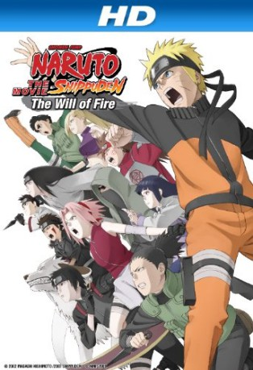

#4802 Naruto Shippuden - The Movie 3 - Die Erben des Willens des Feuers
Alternativ: Naruto Shippûden: The Movie 3: Inheritors of the Will of Fire (Englischer Titel)
 
 IMDB-Wertung: 7.3 / 10
IMDB-Wertung: 7.3 / 10  Metascore: 0
Metascore: 0 
Four Kekkei Genkai shinobi who have been guarding the Hidden Cloud, Stone, Mist and Sand villages disappear without a trace. The Land of Fire comes under suspicion, as it is the only country to have suffered no losses. Mounting suspicion among the four nations is bringing them to the brink of another Great Ninja War.
Jahr: 2009
Dauer: 95 Minuten
FSK: 12
Land: Japan Studio: KSMTonspuren: DTS - ,
Untertitel: Deutsch,
Auflösung: 1080p (1920x1040) Größe: 3819 MB
Genre: Action, Fantasy, Animation/Trick
Regisseur: Masahiko Murata
Drehbuch: Knate Lee
Soundtrack:
Darsteller:
Datei: X:\HD-Anime-Collections\Naruto Movies\Naruto Shippuden - The Movie 3 - Die Erben des Willens des Feuers (2009, FSK12, 1920x1040).mkv seit 18.11.2016
Festplatte: Gemischt-01+Anime
 Es gibt insgesamt 17 Filme in der Gruppe 'HD-Anime-Collections\Naruto Movies'
Es gibt insgesamt 17 Filme in der Gruppe 'HD-Anime-Collections\Naruto Movies'